Introduction
The main objective of this project is to design a low-cost ventilator device with mechanical system that is able to provide consistent and accurate ventilation with positive
pressure (for adults, toddlers & infants).
This device will be having the facility of user-interface system in which one of three modes will be selected for ventilation at a time.
Design Requirements:
For proceeding with this objective, we will be provided the essential components and other parts will be printed in Computer Numerical Control(CNC) machine
and Ultimaker 3D printing machine in Fabrication Lab and Workshop Lab.
Following components are considered for design requirements:
- Two Dynamixel Motors (to push the ambu bag from left and right sides)
- LCD Display with I2C Module (for displaying menu)
- Rotary Encoder (to choose the options and click the button)
- Jumper Wires (for connections of components)
- 12V DC Power Supply
- Self Created Dedicated Printed Circuit Board
- Buck Converter (to step the 12V DC voltage down to 5V for LCD Display with I2C Module and Rotary Encoder)
- Resuscitator (Ambu Bag)
- Some Parts to be Printed from Ultimaker
- Some Parts to be Printed from CNC Machine
High Level Design
Sample Images of Final Design:
The following picture of product has been focused upon as a reference design:

From this design, an idea will be taken and a similar product will be designed.
The following picture of inside's circuit diagram has been focused upon as a reference which is to be updated:

This reference circuit is based on two Arduinos which are connected by I2C protocols in which two of them are connected with each other with I square C(I2C) protocol by connecting two analog pins A4 & A5 of both Arduinos. One Arduino is Master which is sending signal to other Arduino which is Slave. Master Arduino is for LCD Display and Rotary Encoder and Slave Arduino is for motors.
From this circuit diagram, we have been instructed to convert the whole scenario from two Arduinos to one Arduino which has proved to be a grave challenge.
In other words, we have been guided to created our own dedicated PCB Circuit which should run all the components with only one micro-controller.
Mechanical Drawing:
The following picture is the roughly drawn mechanical design of the product:
Different dimensions (in inches) have been assigned to the parts keeping in mind the size of Ambu Bag and other parts.

The following picture is the roughly taken down circuitry inside the product:

Project Execution Plan:
All the electrical and mechanical components will be tested and learnt to control one by one, and then collectively be controlled to get the genuine idea and understanding. In this manner, the provided referenced circuit will be implemented.
Distribution of Tasks:
| S.No | Tasks | Pictures | Distributed to |
|---|---|---|---|
| 1 | To operate the simple Servo Motors before reaching the Dynamixel Motors through PWM Pin of Arduino UNO to get the idea of controlling them. |  |
Both |
| 2 | To operate the LCD Display with I2C Module to get the idea of controlling it. |  |
Both |
| 3 | To operate the Rotary Encoder with LCD Display with I2C module to get the idea of controlling it. |  |
Hasnain Ali (033-19-0028) |
| 4 | To implement the given circuit with two Arduinos as reference. |  |
Both |
| 5 | To implement the basic code of Dynamixel Motors to get the idea of operating them. |  |
Both |
| 6 | To start connecting Rotary Encoder and LCD Display with I2C Module with Dynamixel Motors from scratch. |
.jpg)
|
Hasnain Ali (033-19-0028) |
| 7 | To program and finalize the complete code step by step. |  |
Mohammad Adeel (033-19-0020) |
| 8 | To design in CAD. |  |
Hasnain Ali (033-19-0028) |
| 9 | To work on PCB Designing. |  |
Team of FAB Lab |
| 10 | To solder components on PCB. | 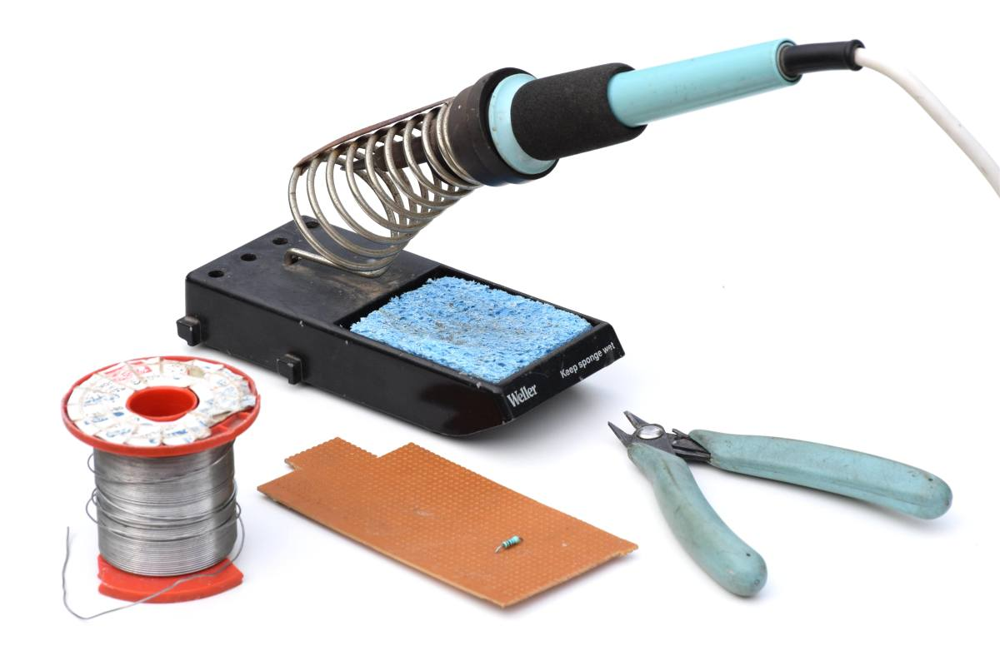 | Mohammad Adeel (033-19-0020) |
| 11 | Printing the PCB. |  |
Team of FAB Lab |
| 12 | Printing all 3D parts. |
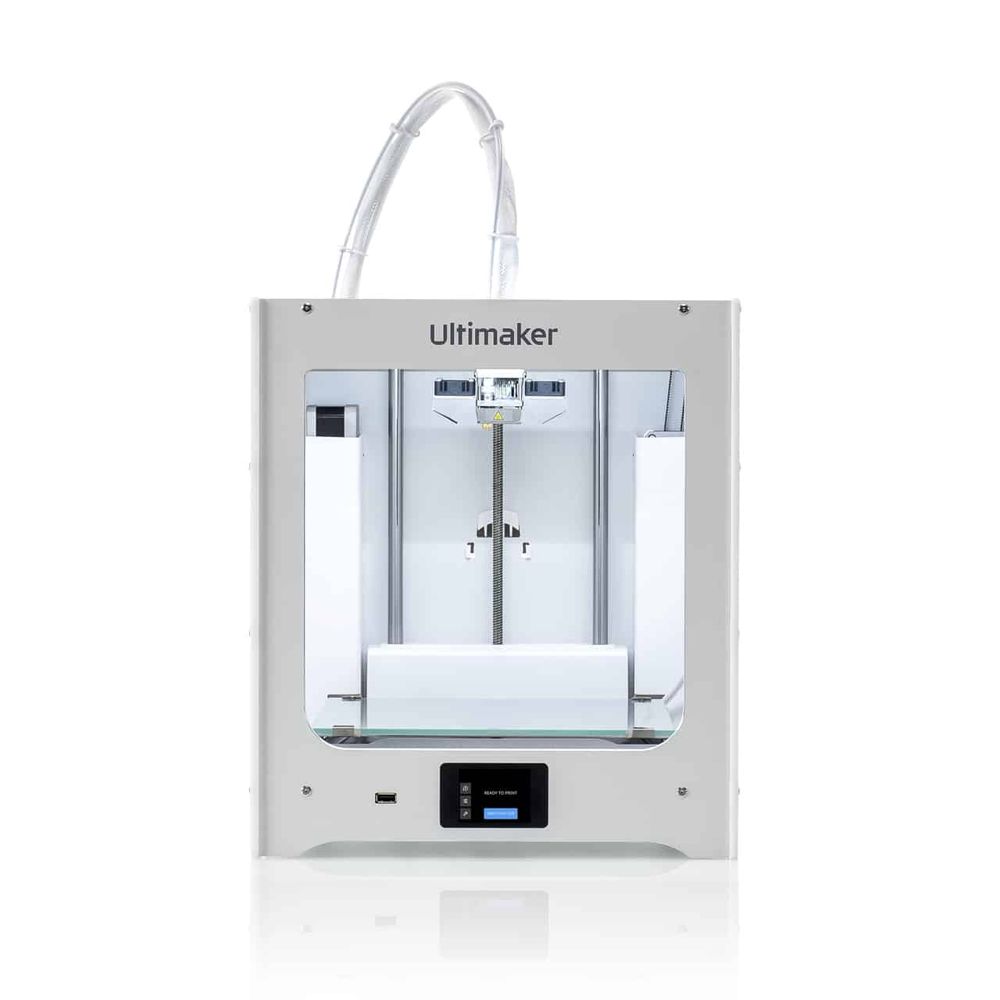
 |
Team of FAB Lab |
| 13 | To assemble everything together. |  |
Both |
| 14 | To make report. |  |
Both |
Execution of General Tasks and Main Tasks by Using Arduino UNO:
-
Task No.1
Simple Servo Motors
With general code.


-
Task No.2
LCD Display
With general code.
Before operating the LCD display with I2C module, LCD display with twnenty pins without I2C module was also tried to operate with 10k ohm and 1k ohm potentiometers individually, but it was difficult to operate and output was not being shown.


Then, the LCD Display with I2C module was operating easily and successfully with two analog pins of Arduino to be connected with the I2C Module without potentiometer.
.jpg)


-
Task No.3
Rotary Encoder has been connected with the LCD Display with I2C Module to have the general idea of using it for navigating for the options.
With general code.
-
Task No.4
In the following scenario, complete reference circuit and the its code has been implemented.
From Website


In this video, nothing is visible in the LCD except the brightness, because while implementing this whole reference circuit along with code, previous LCD Display without I2C Module was connected, which did not work.
-
Task No.5
Operating Dynamixel Motors with simple code to get the idea.

-
Task No.6
Here, Rotary Encoder and LCD Display with I2C Module have been connected to operate the Dynamixel Motors from scratch.


-
Task No.7
Step by step, code is being finalized and implemented.
After opting for availabe and suitable components, we are going to connect them and progam a suitable code step-by-step.
Design
High Level System Diagram:
The following circuit diagram has been created in Fritzing application software.
This became our finalized circuit design after receiving suitable components and working hard on coding for having one micro-controller.

Description of Principle of Operation:
In this circuit, 12V DC power supply has been connected to the one Dynamixel Motor and other Dynamixel Motor is connected to the first
Dynamixel Motor serially which is fixed and decided way of connecting as many Dyanmixel Motors. Only one pin of one Dynamixel Motor is sufficient to
be connected to the D1(Tx) of the Arduino which is one of the two pins of Arduino for serial communication. With LCD Display, I2C Module has
been connected to convert the serial data travelling process into parallel data travelling process which reduces the pin connections. Here, with module,
only two analog pins A4 & A5 of Arduino have been connected to the SDA(Serial Data) & SCL(Serial Clock) of the I2C Module. Rotary Encoder
's three pins have been connected to the digital pins D2, D4 and D3 of the Arduino.
LCD Display with I2C Module and Rotary Encoder both need only 5V DC Power Supply which can be provided via Arduino's 5V & GND pins.
When the Arduino code is uploaded in the Arduino UNO, there will be a menu with options
(Adult Mode, Toddler Mode & Infant Mode) being displayed in the LCD Display, and one of the options can be chosen with the help of Rotary Encoder.
In this manner, Dynamixel Motors will start and push the Ambu Bag from left side and right side as per the requirement.
| Component Name | Picture | Description |
| Dynamixel Motor |  |
According to the Servo Motor in the reference circuit, at least 17.2 kg.cm torque is needed to push the Ambu Bag effectively.
For approaching this scenario, we have Dynamixel Motors which can be operated at 12V DC Power Supply which is easier to be connected with just one pin to produce the similar torque to push the Ambu Bag. |
| I2C Module |  |
This module has been used with LCD Display to convert serial data travelling process into parallel data travelling process and for reducing pin connections from sixteen to four. |
| Rotary Encoder | |
This device is more prefarable than an ordinary potentiometer because of its more sensitive internal construction and
continuous rotation and having a button in its knob.
In this manner, it is convenient for navigating the menu. |
|
Buck Converter
(will be used in the PCB ahead) |
 |
As 12V will be used by Dynamixel Motors and 5V will be used by LCD Display with I2C Module and Rotary Encoder, this device, used as a Voltage Regulator, will step down the 12V DC voltage to 5V DC Voltage only for Display with I2C Module and Rotary Encoder. Its potentiometer is adjusted to produce 5V from 12V DC Power Supply only for LCD Display with I2C Module and Rotary Encoder. |
Connectivity of Components by Protocols:
Three main protocols have been used in the circuitry of this project.
- UART Protocol
- SPI Protocol
- I2C Protocol
-
UART Protocol:
UART stands for Universal Asynchronous Reception Transmission. This protocol permits the arduino to communicate with serial devices through the pins D0(Rx) & D1(Tx).
Dynamixel Motors have been connected by using this protocol from D1(Tx) digital pin. -
SPI Protocol:
SPI stands for Serial Protocol Interface. This protocol is implemented for two way communication between two devices especially when there is the involment of clock signals.
Rotary Encoder has been connected by using this protocol from D2,D4 & D3 digital pins. -
I2C Protocol:
I2C stands for Interintegrated Circuit or I square C. It is especially used when master and slave devices are connected for sending and receiving the signals as well as for displaying text in LCD conveniently.
LCD Display with I2C Module has been connected by using this protocol from A4 & A5 analog pins.
Electrical Schematic

Description
From the beginning of our this project, our circuitry is based on Arduino. Hence, the schematic has been created similar to that of Arduino
in which ATMEGA328p micro-controller of SMD package has been used along with LEDs, capacitors, resistors, buck converter (voltage regulator),
and a crystal oscillator.
In addition to these, male connectors have been attached for our components and for uploading the code with FTDI Cable and for Bootload.
Among these connectors, only one three pin connector has been attached for one Dynamixel Motor
,because the other Dynamixel Motor will be connected serially with the first one.
PCB Layout

Challenges
Firstly, we both tried to make the PCB on Eagle software, but we could not do that because of the complexity of wires.
Then, the team of FAB Lab helped us create the design of two layers and solder the IC of ATMEGA328p micro-controller of SMD package.
Secondly, there was the error of reversed polarities of +ve & -ve terminals. It was resolved by connecting the 12V power in other direction.
Thirdly, there was the error from the PCB of having 5V for the Dynamixel Motors (needing 12V)
which must have been for only Rotary Encoder and LCD Display with I2C Module. It was resolved by the team of FAB Lab by some extra connections behind the board.
Bill of Material

SRM Machine Working

Clean Printed Circuit Board


First Layer Second Layer

With Buck Converter
Populated Printed Circuit Board


With Bill of Material
Burning the Bootloader


Procedure of Burning Bootloader
To burn the Bootloader in the new Micro-controller, a Bootloader Circuit is required whose few pins are connected with few pins of the nine-pin header of the PCB. The FTDI cable is connected with its header. From the Arduino IDE software, Burn Bootloader option is chosen from Tools and Bootloader is burnt. In this process, two USB data cables are required which are connected to the PC, one for Bootloading Circuit and other for FTDI Cable.
Challenges in Booting Up
Successfully after burning the Bootloader, firstly, we had been instructed to disconnect the Buck Converter whenever we had to upload the code in the Micro-controller only with FTDI Cable, because it could cause the voltage to become double which might destroy the whole PCB with over voltage supply. Secondly, there must not have been any connection with the PC while connecting the Buck Converter for running the circuit with components.
Successfully Operating Circuit

Video
Demonstration of Operational the Circuit
In this PCB, basically, four components are to be attached which are Dynamixel Motor, LCD Display with I2C Module, Rotary Encoder,
and a Buck Converter. While operating the circuit, 12V voltage is supplied to the PCB from which all the 12V voltages are consumed by
Dynamixel Motors. But, LCD Display with I2C Module and Rotary Encoder consume only 5V which are provided by
the Buck Converter which steps down the 12V DC voltages to 5V DC voltages.
In this manner, only one 12V DC Power Supply is used effectively for the operation of whole circuitry.
Flow Code of the Software Design

Main Construct of Program

Challenges
Firstly, we had to study the whole scenario and write our own code of one Micro-controller. For this, we analyzed all the libraries and their built-in functions to be used. Secondly, we had to create the conditions for Rotary Encoder under which LCD Display with I2C Module could be controlled. Thirdly, we had to understand the serial connection of Dynamixel Motors along with their fixed ID numbers which were mandatory in the built-in functions of the library of Dynamixel Motors. Lastly, with many user-defined functions, we merged everything and programmed a suitable code for this.
CAD Design of Enclosure
| Back |  |
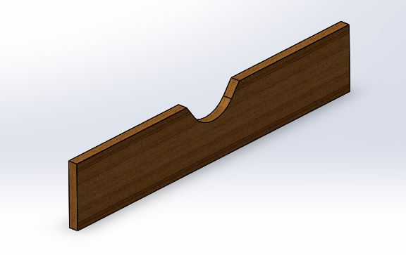 | Designed by us | |
| Front |  |
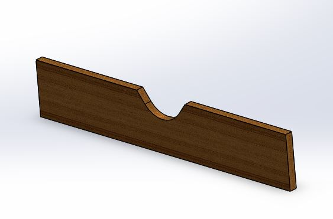 | Designed by us | |
| Bottom |  |
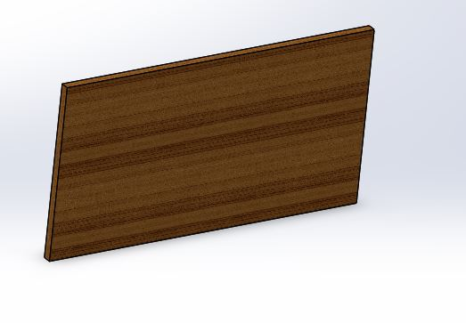 | Designed by us | |
| First Top |  |
 |
Designed by us | |
| Second Top |  |
 |
Designed by us | |
| Third Top |  |
 |
Designed by us | |
| Fourth Top |  |
 |
Designed by us | |
| Left |  |
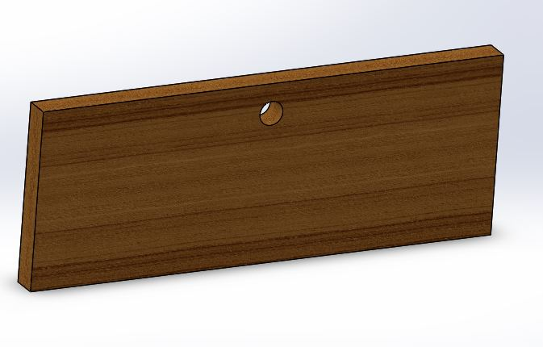 | Designed by us | |
| Right |  |
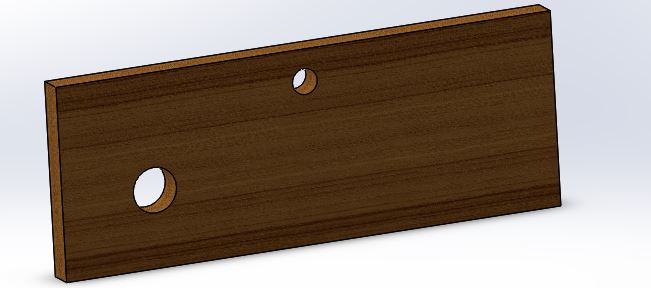 | Designed by us | |
| Rod |  |
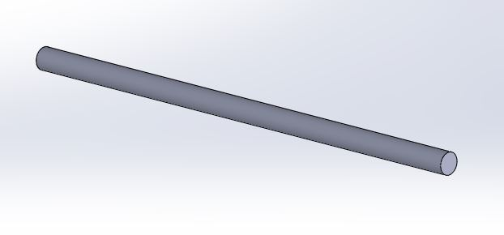 | Two pieces of about 6 inches are to get cut and purchased from market | |
| Bumper | 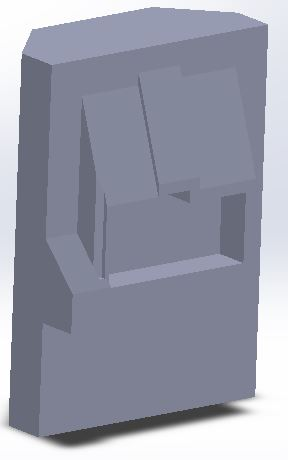 | Taken from website | ||
| Support | 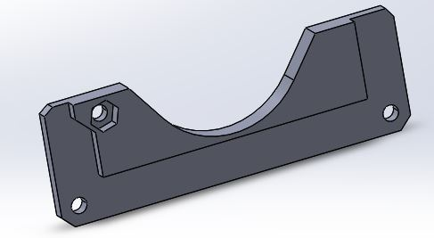 | Taken from website | ||
| Clamp Arm |  |
Taken from website | ||
| Gear | 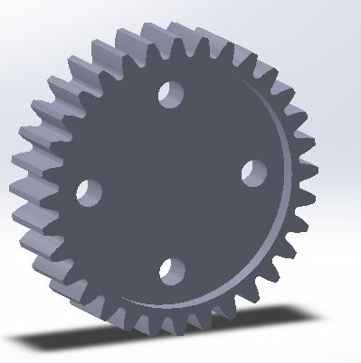 | Taken from website and modified | ||
| Housing Base |  |
Taken from website | ||
| Rail | 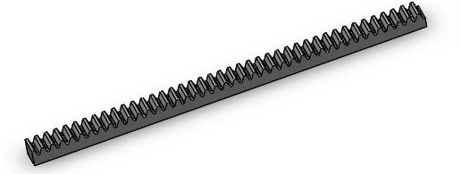 | Taken from website and modified | ||
| Ball Bearing |  |
Taken from SolidWorks | ||
| Sliding Part |  |
 |
Designed by us | |
| Assembly of Housing Base, Rail, Ball Bearing & Sliding Part |  |
Assembled by us in SolidWorks | ||
| Motor Mount |  |
 |
Designed by us | |
Assembly of all Parts


Design Consideration
The idea of the design has been taken from the reference website, and the dimensions have been set in inches. According to the height and diameter of Ambu Bag, the dimensions have been decided, and upper part has been built according to the movement of bumper. Inside the enclosure, there will be the dedicated PCB and wires to connect the components internally. All the components are outside the enclosure execpt PCB to whom 12V DC power supply will be connected from the big hole as to be seen.
Fabrication, Design and 3D Printing
3D Printing in the Ultimaker

Procedure
The STL file is opened in Cura slicing 3D printing application where the part is viewed and set according to the slicing pattern, and time taken can also be taken in. Then, GCode is formed which is copied in the SD Card and inserted in the Ultimaker which understands the GCode, and prints the part by slicing the hot plastic material in the required pattern.


Cutting Parts in the CNC Machine

Procedure
In this process, DXF file is used and adjusted in the software of CNC Machine in which the inside cuts and outside cuts are decided. For holes, inside cut process is chosen for which separate commands are set up.


Getting Two Rods Cut from the Market

Assembly of all Parts


Results
Final Design


Cost of the Project
| Component | Cost |
|---|---|
| Full PCB | Rs.4552 |
| LCD Display | Rs.488 |
| I2C Module | Rs.163 |
| KY-040 Rotary Encoder | Rs.163 |
| Dynamixel Motors | Rs.23413 |
| Plywood | Rs.4227 |
| Plasting of 3D Printing | Rs.4065 |
| Metal Rods | Rs.260 |
| Ball Bearings | Rs.1500 |
| Total: | Rs.38,831 |
Business Model of the Project
Nowadays, every product, especially highly proficient and technological, is demanded a lot in the market. Here, our mission is to create somehow an affordable and portable ventilator which can be used in case of extreme emergencies just like in ambulances. As the world has been caught by the highly contagious of COVID, such project is helpful in this critical condition in which the patients can be provided the convenient means of breathing. The two main advantages of this project are that it is a little bit affordable and portable to carry everywhere in case of serious and critical conditions.
Reference
Click here to visit the website of reference.Source Code
Click here to download the source code.Eagle Files
Click here to download the Eagle Files.CAD Files
Click here to download the CAD Files.Fritzing
Click here to download the Fritzing File.Conclusion
In this course, we felt fortunate to learn plenty of new things by the strategy of self-learning. It must be said that this course proved to be
different from the rest of courses. We were free to apply new things and to do brain-drilling activities.
While making project, we learnt about group management, coordination and cooperation with one another. Our concepts were revised and polished, and
teaching and learning activities were always together.
Although it was the big loss of having the off days during the session, yet we tried our best to overcome the situation and hardships.
In our project, at the end, some mechanical errors occurred, which are the lessons for us to be more careful for them ahead.
To sum up, this course is full of learning. All are encouraged to study this with the great pomp and show.